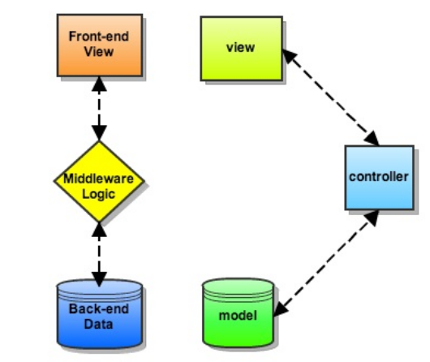

Introduction to programming using Python
Session 13
Matthieu Choplin
- Introduction to modern web development using framework
Objectives
- High level view of a modern web application
- Concrete example using flask
Front-end, Middleware, Backend
- Front-end: html, css, javascript, what the user sees
- Middleware: handle HTTP requests, sessions and link the front end to the backend
- Back end: where the data is stored, a analysed and processed
MVC (Model View Controller) (1)
MVC (2)
- A user requests to view a page by entering a URL.
- The application matches the URL to a predefined route.
- The controller action associated with the route is called.
- It uses the Models to retrieve all of the necessary data, organizes it, and sends it off to the…
- View, which then uses that data to render the final webpage presented to the the user in their browser.
MVC (3)

An example of a python web framework: flask
- Doc for reference: http://flask.pocoo.org/docs/0.12/
- Installing flask
- Creating an "Hello World" page
Hello World
# ---- Flask Hello World ---- #
# import the Flask class from the flask package
from flask import Flask
# create the application object
app = Flask(__name__)
# use the decorator pattern to
# link the view function to a url
@app.route("/")
@app.route("/hello")
# define the view using a function, which returns a string
def hello_world():
return "Hello, World!"
# start the development server using the run() method
if __name__ == "__main__":
app.run()When you run that script, what are the 2 urls that are going to show "Hello World"?
Explaining the code without the view function
from flask import Flask
app = Flask(__name__)
if __name__ == "__main__":
app.run()- We imported the Flask class from the flask library in order to create our web app.
- Next, an instance of the Flask class was created and assigned to the variable app .
- Finally, we used the run() method to run the app locally.
Explaining the view function
@app.route("/")
@app.route("/hello")
def hello_world():
return "Hello, World!"- Here we applied two decorators - @app.route("/") and @app.route("/hello") to the hello_world() function. These decorators are used to define routes. In other words, we created two routes - / and /hello - which are bound to our main url, http://127.0.0.1:5000. Thus, we are able to access the function by navigating to either http://127.0.0.1:5000 or http://127.0.0.1:5000/hello.
- The function simply returned the string "Hello, World!".
What happen if you remove the 1st app.route('/') decorator?
Interlude on decorators (1)
- Decorators are used as wrapper around functions
- They are functions that take in parameter a function and return a function
Example:
def my_decorator(function):
print("Decorator called with in parameter the function", function)
return function
@my_decorator
def hello():
print("Hello!")
hello()Interlude on decorators (2)
With the following decorator:
def my_decorator(function):
print("Decorator called with in parameter the function", function)
return functionWe have...
@my_decorator
def hello():
print("Hello!")Equivalent to...
def hello():
print("Hello!")
hello = my_decorator(hello)Interlude on decorators (3)
The decorators are useful for modifying the behaviour of our functions
In the context of a flask application, just remember that the url requests are mapped to the functions that are going to generate the views thanks to the app.route decorator
To learn more about decorator: http://simeonfranklin.com/blog/2012/jul/1/python-decorators-in-12-steps/
Dynamic Routes
Now to make it dynamic first update the route to take a query parameter:
@app.route("/test/<search_query>")
def search(search_query):
return search_queryNavigate to http://localhost:5000/test/hi. You should see "hi" on the page. Test it out with some different URL parameters.
Type converters (1)
URLs are generally converted to a string, regardless of the parameter. You can specify the type of parameter you expect with converters:
- <value> is treated as unicode (string)
- <int:value> is treated as an integer
- <float:value> is treated as a floating point
- <path:some/great/path/> is treated as a path
Type converters (2)
Examples, add the folowing to the app.py file and navigate to each url:
@app.route("/integer/<int:value>")
def int_type(value):
print(value + 1)
return "correct"
@app.route("/float/<float:value>")
def float_type(value):
print(value + 1)
return "correct"
# dynamic route that accepts slashes
@app.route("/path/<path:value>")
def path_type(value):
print(value)
return "correct"Response Object (1)
Open the developer tool of your browser and look for the status code
What is the status code of a successful response? Else, what is it?
Response Object (2)
We can control the status code we return, Example:
@app.route("/name/<name>")
def index(name):
if name.lower() == "michael":
return "Hello, {}".format(name), 200
else :
return "Not Found", 404</name>Accessing database
Download the following database file: test_database.db
from flask import Flask, g
def connect_db():
return sqlite3.connect("test_database.db")
@app.route('/persons')
def main():
g.db = connect_db()
cur = g.db.execute('select FirstName from People')
persons = '\n'.join([p[0] for p in cur.fetchall()])
g.db.close()
return personsSum up
- Model: is what we have in database
- Controller: is what makes front-end and backend interact
- View: was a simple string for now but the idea is to render that in html
Templates: the view (1)
Flask uses by default a templating engine called Jinja
Example:
from flask import Flask, render_template
app = Flask(__name__)
@app.route("/")
def template_test():
return render_template('template.html', my_string="Wheeeee!", my_list=[0,1,2,3,4,5])
if __name__ == '__main__':
app.run(debug=True)Create a directory called templates in which to put the html file
Templates: the view (2)
template.html would be:
<!DOCTYPE html>
<html>
<head>
<title>Flask Template Example</title>
</head>
<body>
<div class="container">
<p>My string: {{my_string}}</p>
<p>Value from the list: {{my_list[3]}}</p>
<p>Loop through the list:</p>
<ul>
{% for n in my_list %}
<li>{{n}}</li>
{% endfor %}
</ul>
</div>
</body>
</html>